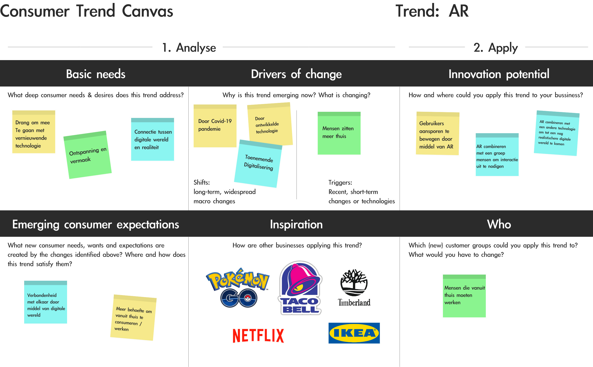
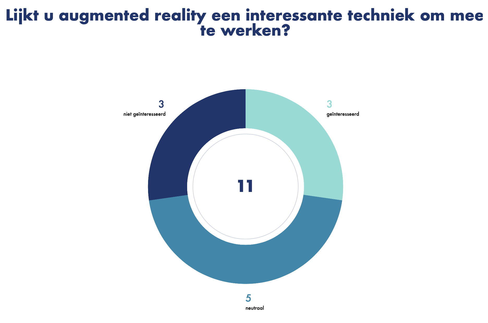
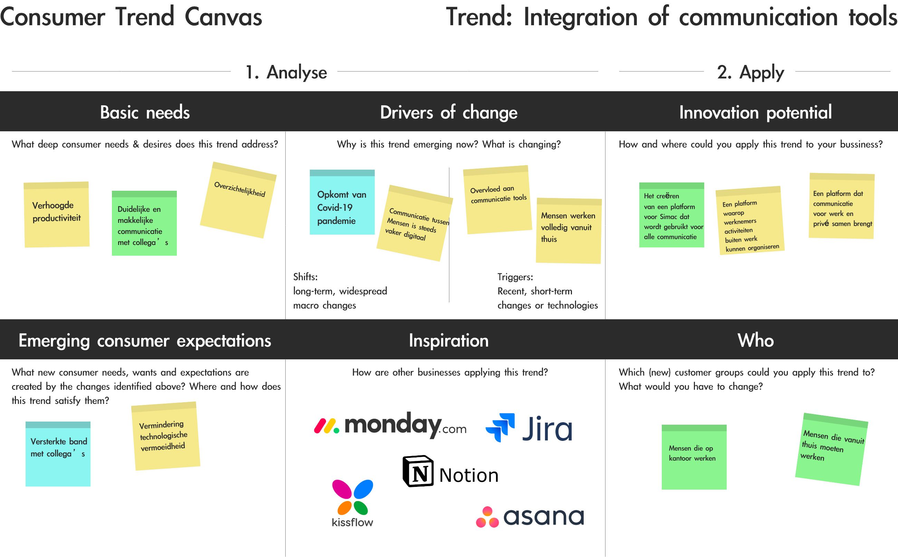
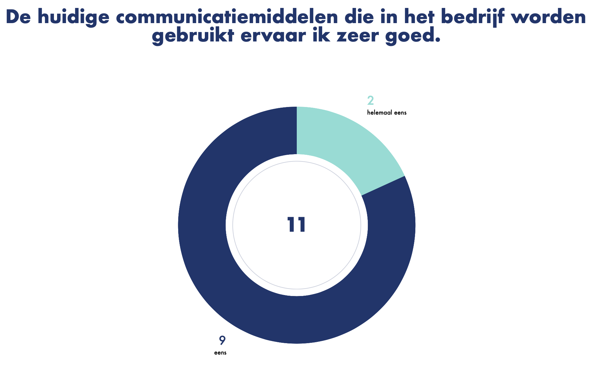
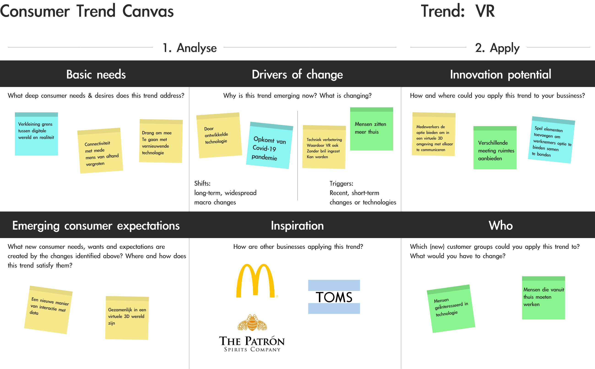
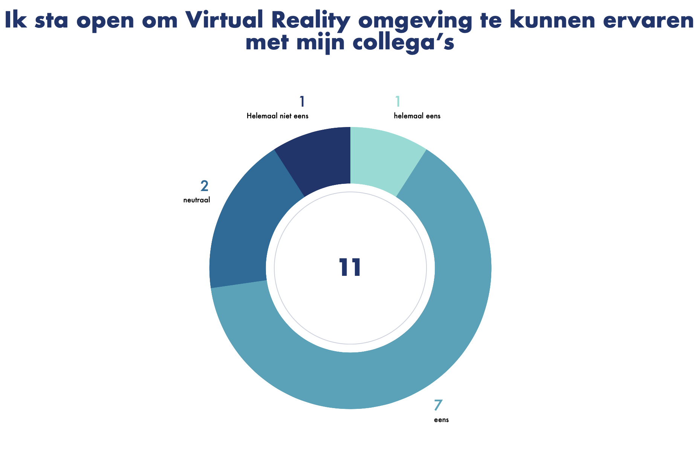

Om meer inzicht te krijgen voor het vinden van een oplossing voor Simac, hebben we verschillende deelvragen opgesteld en deze onderverdeeld onder de groepsleden. Ik ben onderzoek gaan doen naar verschillende trends op het gebied van thuiswerken en welzijn. Hierin heb ik per onderzochte trend een consumer trend canvas gemaakt waarin ik voornamelijk kijk naar inspiratiebronnen en hoe wij aspecten hiervan kunnen overnemen in ons eigen concept. Daarnaast heb ik vragen opgesteld over de onderzochte trends en deze afgenomen in een survey voor de werknemers van Simac.
Onderzoeken welke trends er zijn op het gebied van thuiswerken en welzijn en kijken welke aspecten we hiervan kunnen overnemen in ons concept.


AR kan ingezet worden voor de oplossing voor Simac door medewerkers te stimuleren om deel te maken van een gezamenlijke digitale wereld, waarin zij door middel van bijvoorbeeld spelelementen vanuit thuis toch een gezamenlijk gevoel kunnen creëren.
Uit de survey resultaten blijkt dat de werknemers van Simac niet zo zeer op de hoogte zijn van AR, dit is voor veel nog onbekend. Sommige werknemers hebben er wel van gehoord maar uit de resultaten blijkt dat er weinig interesse is naar AR, werknemers zien dit meer als vrije tijd invulling maar niet geschikt voor werkuren.


Door het integreren van communicatietools voor de werknemers van Simac kunnen we het gemak bieden van het hebben van een overzicht waar alle communicatietools te vinden zijn. Doordat deze geïntegreerd zijn wordt het voor de medewerkers van Simac overzichtelijker en kunnen wij opties bieden om in dit platform ook te gebruiken van buiten werk gerelateerde zaken om tot een communicatieplatform te komen waar alle medewerkers zich thuis voelen.
Uit de survey resultaten is gebleken dat de werknemers van Simac geen problemen ervaren met de huidige communicatie tools. Zij ervaren dit niet als chaotisch en zijn dus ook niet opzoek naar een platform voor het integreren van hun communicatietools.


Door het gebruik van VR kunnen we digitale werelden creëren voor de werknemers van Simac om elementen van het op locatie werken te vervangen. Dit kan bijvoorbeeld gedaan worden door een digitale 3D koffie ruimte waarin medewerkers elkaar kunnen opzoeken en het gevoel hebben fysiek bij elkaar te zijn. Daarnaast kan het ook voor meetings of andere activiteiten buiten werk gebruikt worden.
Uit de survey blijkt dat veel medewerkers van Simac bekend zijn of wel eens gehoord hebben van VR. Er is veel interesse naar, maar de werknemers zien het meer als een vrijetijdsbesteding en zien niet zo goed hoe het een oplossing kan zijn voor problemen op het gebied van thuiswerken en welzijn.
Uit het onderzoek is gebleken dat AR weinig interesse opwekt bij werknemers van Simac en ze hiermee geen oplossing zien
voor het verbeteren van het thuiswerken en hun welzijn. Om deze reden raad ik het dan ook af om AR mee te nemen in het
vormen van ons concept.
Daarnaast is ook gebleken dat werkenemrs van Simac erg tevreden zijn met de communicatie tools waar ze nu gebruik van maken
en ervaren dit dus ook niet als chaotisch. Om deze redenen zien zij dus geen reden om deze communcatie tools te intergreren.
Het meenemen van het intergreren van communicatie tools binnen Simac in onze conceptfase raad ik dus ook af.
Verder hadden werknemers van Simac wel interesse in VR. Hoe dit ingezet zou
kunnen worden voor het verbeteren van thuiswerken en welzijn was voor de meeste nog een vraag maar er ontstonden hier wel wat
concepten vanuit de werknemers zelf. Om deze reden raad ik het aan om VR mee te nemen in de conceptfase, maar hierbij moeten
we wel kijken naar hoe we VR effectief kunnen inzetten, zodat het interessant en duidelijk is voor de werkenemers van Simac
hoe dit voor hun van toepassing is.
Wegens interesse van de doelgroep adviseer ik AR en het intergreren van communicatie tools niet mee te nemen in de conceptfase. VR raad ik wel aan mee te nemen in de conceptfase met hierbij de juiste onderbouwing.
Yonder (2021, Maart 6). Opgehaald van yonderconsulting.com:
https://yonderconsulting.com/5-examples-of-brands-that-use-virtual-reality/
Justin Higginbottom(2020, Juli 4). Opgehaald van cnbc.com:
https://www.cnbc.com/2020/07/04/virtual-reality-usage-booms-in-the-workplace-amid -the-pandemic.html
Alan Seal (2021, Februari 9). Opgehaald van vxchnge.com:
https://www.vxchnge.com/blog/augmented-reality-statistics
Monday.com (2021, Januari 25). Opgehaald van entrepreneur.com:
https://www.entrepreneur.com/article/364049
Align (2021, Maart 12). Opgehaald van aligntoday.com:
https://aligntoday.com/blog/too-many-apps-at-work-time-for-a-better-way/
Andrew Makarov(2021, Februari 1). Opgehaald van mobidev.biz:
https://mobidev.biz/blog/augmented-reality-future-trends-2018-2020#
Bas Gezelle(2021, Januari 4). Opgehaald van adformatie.nl:
https://www.adformatie.nl/digital-transformation-tech/9-augmented-reality-trends-voor -2021
Trend Research Document